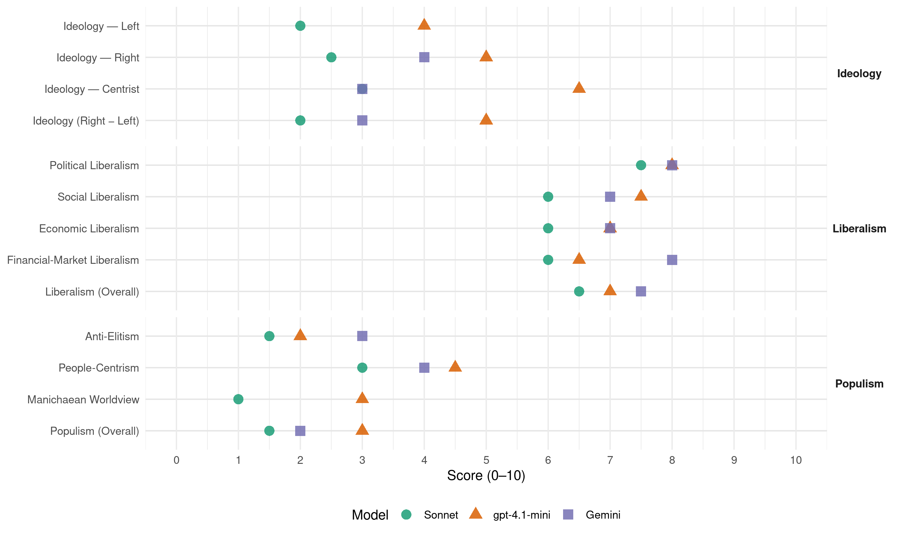

CDA (Netherlands, 2002)
manifesto_id 22521_200205
Get full text: This site shows derived annotations and short verbatim quotes only. The full manifesto text is © Manifesto Project / WZB — obtain it via manifesto-project.wzb.eu using the manifesto_id above.
Headline scores
| Dimension | Sonnet | gpt-4.1-mini | Gemini |
|---|---|---|---|
| Populism (Overall) | 1.5 | 3.0 | 2.0 |
| Anti-Elitism | 1.5 | 2.0 | 3.0 |
| People-Centrism | 3.0 | 4.5 | 4.0 |
| Manichaean Worldview | 1.0 | 3.0 | – |
| Ideology (Right − Left) | 2.0 | 5.0 | 3.0 |
| Liberalism (Overall) | 6.5 | 7.0 | 7.5 |
| Political Liberalism | 7.5 | 8.0 | 8.0 |
| Social Liberalism | 6.0 | 7.5 | 7.0 |
| Economic Liberalism | 6.0 | 7.0 | 7.0 |
| Financial-Market Liberalism | 6.0 | 6.5 | 8.0 |
Evidence per dimension
Economic Liberalism
Gemini · score 7.0 · verified · chunk 1
“ruimte voor maatschappelijk initiatief en ondernemerschap”
solide financieel-economisch beleid met ruimte voor maatschappelijk initiatief en ondernemerschap, waarin niet alleen het belang van
Gemini · score 7.0 · verified · chunk 2
“Versterking van de Europese interne markt”
en keuzevrijheid de volle nadruk. CDA-PRIORITEITEN ARMOEDEBELEID EN SOCIALE ZEKERHEID 2002-2006: 1. INTEGRAAL INKOMENSBELEID 10.1.1 Het CDA kiest voor een integraal inkomensbeleid. De versnippering van het inkomensbeleid heeft geleid tot een opeenstapeling van regelingen en tal van onevenwichtigheden. Het CDA wil in de komende kabinetsperiode toewerken naar een overzichtelijk systeem van belastingkortingen voor basisuitgaven aan zorg, wonen (huren), kinderen en studie. De belastingkortingen worden afgestemd op de huishoudsituatie en worden verder bepaald door de kosten van kwalitatief goede voorzieningen. Veel van de bestaande regelingen zijn dan niet meer nodig. Door de vereenvoudiging verdwijnt in dat geval veel bureaucratie en kan weer rekening worden gehouden met de daadwerkelijke gezinsdraagkracht. Hierdoor wordt de armoedeval afgevlakt en wordt werken weer lonend voor een grote groep mensen met een uitkering. 10.1.2 Het huishoudinkomen wordt bepalend in het voorgestelde gerichte inkomensbeleid. Fiscalisering van de subsidies betekent dat de huidige subsidies omgevormd worden tot inkomensafhankelijke heffingskortingen. Op deze wijze wordt een zekere mate van progressie - die nu ook te vinden is in de subsidiesfeer - in de sfeer van de inkomstenbelasting gebracht. Inkomensbeleid komt zo terecht op de plek waar het hoort: in de inkomstenbelasting. 2. BETAALBAAR WONEN VOOR IEDEREEN 10.2 De huursubsidie biedt voor veel mensen met lage inkomens onvoldoende uitkomst. De huidige huursubsidie is bovendien een van de grootste veroorakers van de armoedeval. Het CDA wil dit veranderen door de huursubsidie in de komende kabinetsperiode te fiscaliseren door een inkomensafhankelijke huurkorting. De korting wordt geleidelijker afgebouwd dan nu het geval is. Bovendien wordt passend wonen beloond. 3. LOON NAAR WERKEN 10.3 Het CDA vindt het vooral belangrijk dat het belastingstelsel ook in de toekomst burgers aanmoedigt volgens het principe loon naar werken. Daarom pleit het CDA op termijn voor een verdere verlaging van de tarieven in de inkomstenbelasting. Ook in Europa is een duidelijke trend waarneembaar richting lagere belasting op arbeid. Het CDA wil op termijn daarop aansluiten op voorwaarde dat de inkomensgevolgen eerlijk zijn en de sterkste schouders de zwaarste lasten blijven dragen door de invoering van inkomensafhankelijke fiscale kortingen. 4. MEER MAATWERK BIJ GEMEENTEN 10.4 De Rijksoverheid is primair verantwoordelijk voor het inkomensbeleid. De bijzondere bijstand moet zijn bijzondere karakter terug krijgen. Gemeenten zijn bij uitstek in staat om maatwerk te leveren als het gaat om de bestrijding van armoede. Voor gemeenten ligt er dan ook een ondersteunende taak als het gaat om de inkomenssituatie van mensen die langdurig van een laag inkomen moeten leven. Om mensen met een laag inkomen te ondersteunen, helpt een soort brigade met het invullen van de noodzakelijke formulieren om gebruik te kunnen maken van de diverse (gemeentelijke) subsidies. 5. GEEN WACHTLIJSTEN BIJ SCHULDSANERING 10.5 De schuldenproblematiek concentreert zich onder andere bij gezinnen met kinderen met een laag inkomen en neemt toe. Het voorkomen dat mensen teveel schulden maken is het belangrijkst. In verschillende gemeenten is goede ervaring opgedaan met vroegtijdige signalering in samenwerking met woningcorporaties en energiebedrijven. Een integrale aanpak werkt het beste. Als mensen eenmaal problematisch veel schulden hebben, dan is een snelle aanpak geboden. De wachtlijsten voor de sanering zijn o.a. het gevolg van een tekort aan bewindvoerders. Een verruiming van de criteria daarvoor kan uitkomst bieden, zodat niet alleen de professionals zoals advocaten beschikbaar zijn. Daarnaast moet er ruimte komen voor particuliere organisaties om mensen met schulden bij te staan. 6. SOLIDAIR MET ZELFSTANDIGEN 10.6 De sociale zekerheidsregelingen voor zelfstandigen blijken niet altijd de beoogde bescherming te bieden. Een van de knelpunten is de vermogengrens in de regelingen. Het vermogen waarmee het inkomen verdiend wordt, moet voor een groter deel buiten beschouwing gelaten worden. 7. SOLIDAIR MET GEHANDICAPTEN EN CHRONISCH ZIEKEN 10.7.1 Gehandicapten en chronisch zieken hebben veelal een laag inkomen en daarnaast bijzondere kosten. In de huurkorting en zorgkorting kan daarmee rekening gehouden worden. 10.7.2 Alle openbare voorzieningen dienen toegankelijk te zijn voor mensen met een handicap. 8. DE AOW EEN WELVAARTSVAST BASISPENSIOEN 10.8.1 De AOW moet als welvaartsvast basispensioen gehandhaafd blijven. De koppeling van de AOW aan de gemiddelde loonstijging blijft gehandhaafd. 10.8.2 De aanvullende pensioenen in Nederland behoren tot de beste en duurzaamste ter wereld doordat zij geregeld en betaald worden door werkgevers en werknemers. Een pensioenwet met de overheid aan het stuur, wordt afgewezen. 10.8.3 Het CDA kiest voor een bestuursdeelname door actieven, slapers en gepensioneerden bij het bestuur van pensioenfondsen 9. ZORG VOOR LANGDURIG DRUGSVERSLAAFDEN 10.9 Verslaving en dakloosheid staan haaks op ons mensbeeld. Zorg voor dak- en thuislozen moet daarom vooral worden gericht op maatschappelijk herstel. De overheid bevordert dagbesteding en waar nodig meer verplichtende vormen van hulpverlening. De mogelijkheden van dwangverpleging worden verruimd. Niet altijd is maatschappelijk herstel op korte termijn mogelijk. Voormalige ziekenhuizen, kazernes en boerderijen worden daarom ingericht for een meer permanente huisvesting van dakloze verslaafden. Zij krijgen daar een individueel behandelplan, waarvan behalve vrijwillig afkicken ook de verstrekking van methadon onderdeel kan uitmaken. 10. UITBREIDING SOCIALE WERKVOORZIENING 10.10 De sociale werkvoorziening biedt werk in een beschermde werkomgeving aan mensen die vanwege (tijdelijke) beperkingen geen reguliere arbeid kunnen verrichten. Voor de mensen die om deze reden een bijstandsuitkering ontvangen is werken in deze omgeving een beter perspectief, dan het uitzicht op een levenslange uitkering. De WSW wordt hiertoe uitgebreid. Zo kan de sociale werkvoorziening de detacheringmogelijkheden van werknemers verruimen. RECENTE RAPPORTEN EN VOORSTELLEN VAN HET CDA OVER GEZONDHEIDSZORG Nieuwe regie in de zorg. Een christen-democratische visie op de structuur van de gezondheidszorg, Wetenschappelijk Instituut voor het CDA (Commissie van der Steenhoven), 2000. Naar meer menselijke maat in de gezondheidszorg. Discussievoorstel om tot een betere verantwoordelijkheidsverdeling in de gezondheidszorg te komen, CDA-Tweede-Kamerfractie, 1999. OVER ONDERWIJS Vertrouwen in talent. Ruimte voor onderwijs met een missie. Wetenschappelijk Instituut voor het CDA (Commissie Postma) 2002 OVER GEZINSBELEID EN LEVENSLOOPBELEID De druk van de ketel: familie- en gezinsbeleid. Naar een levensloopstelsel voor duurzame arbeidsdeelname, en tijd en geld voor scholing, zorg en privé Wetenschappelijk Instituut voor het CDA (Commissie-Klink), 2001. Ruimte voor elkaar. Een nieuwe balans tussen scholing, arbeid, zorg en vrije tijd, Discussienotitie voor het Jaar van de generaties, CDA, 2000. Kiezen voor Kinderen, Voorstellen voor een kindvriendelijk beleid, CDA-Tweede-Kamerfractie, 1999. In het hart van de samenleving. Een christen-democratisch manifest voor een integraal ouderenbeleid, 2002 OVER INKOMENSBELEID EN BELASTINGHEFFING Evenredig en rechtvaardig. Een voorstudie naar een vlakke belasting; een vervolg op herstel van draagkracht, Wetenschappelijk Instituut voor het CDA (Commissie-Ydema), 2001. Gericht en rechtvaardig. Een christen-democratische oplossing voor de armoedeval, CDA-Tweede-Kamerfractie, 2000. Herstel van draagkracht. Belastingadvies inzake de belastingherziening 2001, Wetenschappelijk Instituut voor het CDA (Commissie-Klink), 2000. De Moeite Waard. CDA-voorstel voor het maximeren van de kosten van wonen, zorg en kinderen, CDA-Tweede-Kamerfractie, 1998. OVER VEILIGHEID Samen Nederland veiliger maken. Een aanzet voor het CDA-debat over veiligheidsontwikkeling, CDA (Commissie-Van Rij), 1999. OVER EUROPA De relatie tussen de EU en de VS, Commissie Buitenland van het CDA, 2000 Op weg naar een verdrag van Nice, Commissie Buitenland van het CDA, 2000 OVER ONTWIKKELINGSSAMENWERKING WTO: in openheid naar opening, Commissie Buitenland van het CDA, 2001. Ontwikkelingssamenwerking in de eenentwintigste eeuw, Commissie Buitenland van het CDA, 2000. OVER DEFENSIE Beter bewapend voor je geld. Naar een nieuw defensiematerieelbeleid, CDA-Tweede-Kamerfractie, 2001. “De krijgsmacht in de 21ste eeuw, CDA-Tweede-Kamerfractie, 2000. OVER LANDBOUW Naar een duurzame en vitale landbouwsector in Nederland, CDA (Commissie-Veerman), 2001. Een toekomst voor gezins- en familiebedrijven in de landbouw. CDA-notitie over de inkomenspositie van gezins- en familiebedrijven in de landbouw, CDA-Tweede-Kamerfractie, 2000. OVER DE WAO EN DE UITVOERING VAN DE SOCIALE ZEKERHEID Perspectief op herstel. WAO-plan van het CDA, CDA-Tweede-Kamerfractie, 1999. Herstelde verantwoordelijkheid. CDA-voorstel Structuur uitvoering werk en inkomen, 1999. OVER ICT De Waarde(n) van de kennissamenleving (boek met artikelen over ICT), CDA, 2001. OVER RUIMTELIJKE ORDENING Ruimte voor Nederland Kwaliteitsland. Notitie voor een publiek debat van het CDA over de ruimtelijke inrichting van Nederland, CDA (Commissie-Kerckhaert), 2000. OVER MILIEUBELEID Partners in duurzaamheid. Een verantwoordelijk groen perspectief op een duurzame samenleving, Wetenschappelijk Instituut voor het CDA (Commissie-Van Geel), 2000. OVER GROTE STEDENBELEID De toekomst aan de stad. Een stadsmanifest, CDA-Tweede-Kamerfractie, 2000. OVER INTEGRATIEBELEID Een doorstart: van integratie naar participatie, CDA-Tweede-Kamerfractie, 2000. OVER DEMOCRATIE EN BESTUUR Naar een vitale democratie, CDA (Commissie-Postma), 1999 DE UITGANGSPUNTEN - Samenleven doe je niet alleen. Verkiezingsprogramma 1998 - 2002, 1998. - Nieuwe Wegen, Vaste Waarden, CDA. Strategisch Beraad, 1995 - Program van Uitgangspunten, CDA, 1993.
gpt-4.1-mini · score 7.0 · verified · chunk 1
“solide financieel-economisch beleid met ruimte voor maatschappelijk initiatief en ondernemerschap”
Duurzame groei van de welvaart voor huidige en toekomstige generaties op basis van een solide financieel-economisch beleid met ruimte voor maatschappelijk initiatief en ondernemerschap, waarin niet alleen het belang van aandeelhouders telt.
gpt-4.1-mini · score 7.0 · verified · chunk 2
“Het Nederlandse vestigingsklimaat is internationaal gezien zeer concurrerend.”
7.6.1 Het Nederlandse vestigingsklimaat is internationaal gezien zeer concurrerend. Die uitgangspositie dient behouden te blijven en verdere verbeteringen dienen te worden aangebracht indien dat vanuit internationaal perspectief geboden is.
Sonnet · score 6.0 · verified · chunk 1
“ruimte voor maatschappelijk initiatief en ondernemerschap”
Duurzame groei van de welvaart voor huidige en toekomstige generaties op basis van een solide financieel-economisch beleid met ruimte voor maatschappelijk initiatief en ondernemerschap
Sonnet · score 6.0 · mixed · chunk 2
“ruimte komen voor ondernemingszin”
dat er meer mensen aan de slag gaan, dat het arbeidsaanbod wordt vergroot, dat er meer ruimte komt voor ondernemingszin en dat nutsfuncties voor een ieder betaalbaar en toegankelijk blijven.
Financial-Market Liberalism
Gemini · score 8.0 · verified · chunk 2
“criteria van het Stabiliteitspact onder geen beding opgerekt”
reductie van de staatsschuld te worden opgenomen dan de thans geldende 60% BBP. Gezien de onzekere economische ontwikkeling dienen de criteria van het Stabiliteitspact onder geen beding opgerekt te worden. VII. EEN STERKE EN DUURZAME ECONOMIE
gpt-4.1-mini · score 7.0 · verified · chunk 1
“De staatsschuld van het Rijk binnen één generatie moet worden afgelost”
De staatsschuld van het Rijk binnen één generatie moet worden afgelost om straks de kosten van de vergrijzing te kunnen opvangen.
gpt-4.1-mini · score 6.0 · verified · chunk 2
“Voor buitenlandse bedrijven geldt daarbij wel de voorwaarde dat in het betreffende land het netwerk vrij toegankelijk is voor Nederlandse bedrijven.”
7.1 De slagaders van de distributienetwerken, die geen concurrerende infrastructuur kennen en dus per definitie een monopolie zijn (zoals het hoogspanningsnetwerk en hogedrukleidingsnet voor gas), blijven in overheidshanden, maar conform Europese regelgeving staat het gebruik van die netwerken in principe vrij voor elk geïnteresseerd bedrijf. Voor buitenlandse bedrijven geldt daarbij wel de voorwaarde dat in het betreffende land het netwerk vrij toegankelijk is voor Nederlandse bedrijven (‘gelijk oversteken’).
Sonnet · score 6.0 · verified · chunk 1
“concurrerende verzekeraars”
Dit betekent een verplicht hoogwaardige, transparante standaardpolis met daarboven de keuzevrijheid voor extra zorgopties, beide aangeboden door concurrerende verzekeraars.
Sonnet · score 6.0 · verified · chunk 2
“criteria van het Stabiliteitspact onder geen beding opgerekt”
Gezien de onzekere economische ontwikkeling dienen de criteria van het Stabiliteitspact onder geen beding opgerekt te worden.
Political Liberalism
Gemini · score 8.0 · verified · chunk 1
“bevorderen van behoorlijk democratisch bestuur”
Respect voor mensenrechten en het bevorderen van behoorlijk democratisch bestuur zullen daarom naast economische samenwerking de
Gemini · score 8.0 · verified · chunk 2
“Europa moet een democratische rechtsstaat zijn”
subsidiariteitsbeginsel leidend blijft en strikt in acht wordt genomen. Kernwaarden zijn democratie, solidariteit, gerechtigheid, gelijkwaardigheid en duurzaamheid. Europa moet een democratische rechtsstaat zijn met transparante besluitvorming, met een stabiele
gpt-4.1-mini · score 8.0 · verified · chunk 1
“respect voor mensenrechten en het bevorderen van behoorlijk democratisch bestuur”
Respect voor mensenrechten en het bevorderen van behoorlijk democratisch bestuur zullen daarom naast economische samenwerking de centrale doelstellingen van internationaal veiligheidsbeleid moeten zijn.
gpt-4.1-mini · score 8.0 · verified · chunk 2
“Het CDA wil investeren in de versterking van de kwaliteit van het representatieve stelsel, door kiezers meer mogelijkheden te geven om een herkenbare volksvertegenwoordiging te kiezen.”
6.2.1 Het CDA wil investeren in de versterking van de kwaliteit van het representatieve stelsel, door kiezers meer mogelijkheden te geven om een herkenbare volksvertegenwoordiging te kiezen. Onderzocht dient te worden of een deel van de Tweede Kamer gekozen kan worden via regionale kiesdistricten.
Sonnet · score 7.0 · verified · chunk 1
“bevorderen van behoorlijk democratisch bestuur”
Respect voor mensenrechten en het bevorderen van behoorlijk democratisch bestuur zullen daarom naast economische samenwerking de centrale doelstellingen zijn.
Sonnet · score 8.0 · verified · chunk 2
“verdere democratisering van de Europese Unie”
6.9.1 Het CDA is een sterk voorstander van de verdere democratisering van de Europese Unie. De volgende stappen dienen tenminste ondernomen te worden:
Liberalism (Overall)
Gemini · score 7.0 · verified · chunk 1
“bevorderen van behoorlijk democratisch bestuur”
Respect voor mensenrechten en het bevorderen van behoorlijk democratisch bestuur zullen daarom naast economische samenwerking de
Gemini · score 8.0 · verified · chunk 2
“Europa moet een democratische rechtsstaat zijn”
subsidiariteitsbeginsel leidend blijft en strikt in acht wordt genomen. Kernwaarden zijn democratie, solidariteit, gerechtigheid, gelijkwaardigheid en duurzaamheid. Europa moet een democratische rechtsstaat zijn met transparante besluitvorming, met een stabiele
gpt-4.1-mini · score 7.0 · verified · chunk 1
“solide financieel-economisch beleid met ruimte voor maatschappelijk initiatief en ondernemerschap”
Duurzame groei van de welvaart voor huidige en toekomstige generaties op basis van een solide financieel-economisch beleid met ruimte voor maatschappelijk initiatief en ondernemerschap, waarin niet alleen het belang van aandeelhouders telt.
gpt-4.1-mini · score 7.0 · verified · chunk 2
“Het CDA wil investeren in de versterking van de kwaliteit van het representatieve stelsel, door kiezers meer mogelijkheden te geven om een herkenbare volksvertegenwoordiging te kiezen.”
6.2.1 Het CDA wil investeren in de versterking van de kwaliteit van het representatieve stelsel, door kiezers meer mogelijkheden te geven om een herkenbare volksvertegenwoordiging te kiezen. Onderzocht dient te worden of een deel van de Tweede Kamer gekozen kan worden via regionale kiesdistricten.
Sonnet · score 6.0 · verified · chunk 1
“solide financieel-economisch beleid met ruimte voor maatschappelijk initiatief”
Duurzame groei van de welvaart voor huidige en toekomstige generaties op basis van een solide financieel-economisch beleid met ruimte voor maatschappelijk initiatief en ondernemerschap
Sonnet · score 7.0 · verified · chunk 2
“verdere democratisering van de Europese Unie”
6.9.1 Het CDA is een sterk voorstander van de verdere democratisering van de Europese Unie. De volgende stappen dienen tenminste ondernomen te worden:
Anti-Elitism
Gemini · score 3.0 · verified · chunk 1
“gedoogbeleid en een”sorry- en uitvluchtencultuur”“
overheid te bieden wordt ondergraven door een gedoogbeleid en een “sorry- en uitvluchtencultuur”. Het CDA kiest voor een daadkrachtige
gpt-4.1-mini · score 2.0 · verified · chunk 1
“het vertrouwen in de overheid, als het gaat om de uitvoering van kerntaken, zoals handhaving van regels en veiligheid, is laag”
Het vertrouwen in de overheid, als het gaat om de uitvoering van kerntaken, zoals handhaving van regels en veiligheid, is laag. Langzamerhand komen er steeds meer gevoelens van onbehagen en onzekerheid op.
gpt-4.1-mini · score 2.0 · verified · chunk 2
“Van politici en bestuurders mag worden verwacht dat zij redeneren en handelen vanuit het perspectief van mensen.”
Hernieuwde aandacht is nodig voor verbetering van de relatie tussen overheid en burger. Van politici en bestuurders mag worden verwacht dat zij redeneren en handelen vanuit het perspectief van mensen. Daarom moet het representatieve stelsel worden versterkt, zodat het democratische proces herkenbaarder wordt.
Sonnet · score 2.0 · verified · chunk 1
“verstarrend centralisme en regelzucht van bovenaf”
Het laatste wat scholen daarbij kunnen gebruiken, is een verstarrend centralisme en regelzucht van bovenaf. Te lang is dat alleen met de mond beleden.
Sonnet · score 1.0 · verified · chunk 2
“beleid mag echter niet éénzijdig vanuit Den Haag worden gedicteerd”
De kosten mogen niet op andere sectoren in de samenleving of toekomstige generaties worden afgewenteld. Het beleid mag echter niet éénzijdig vanuit Den Haag worden gedicteerd; voor een succesvolle aanpak
Ideology — Centrist
Gemini · score 3.0 · verified · chunk 1
“niet de overheid, maar mensen zelf”
christen-democratisch program waarin niet de markt en niet de overheid, maar mensen zelf in al hun verbanden centraal staan.
gpt-4.1-mini · score 7.0 · verified · chunk 1
“mensen zelf in al hun verbanden centraal staan”
Een concreet, helder en vooral onderscheidend christen-democratisch program waarin niet de markt en niet de overheid, maar mensen zelf in al hun verbanden centraal staan.
gpt-4.1-mini · score 6.0 · verified · chunk 2
“Van politici en bestuurders mag worden verwacht dat zij redeneren en handelen vanuit het perspectief van mensen.”
Hernieuwde aandacht is nodig voor verbetering van de relatie tussen overheid en burger. Van politici en bestuurders mag worden verwacht dat zij redeneren en handelen vanuit het perspectief van mensen. Daarom moet het representatieve stelsel worden versterkt, zodat het democratische proces herkenbaarder wordt.
Sonnet · score 3.0 · verified · chunk 1
“niet de markt en niet de overheid”
Een concreet, helder en vooral onderscheidend christen-democratisch program waarin niet de markt en niet de overheid, maar mensen zelf in al hun verbanden centraal staan.
Sonnet · score 3.0 · verified · chunk 2
“Van politici en bestuurders mag worden verwacht”
VAN POLITICI EN BESTUURDERS MAG WORDEN VERWACHT DAT ZIJ REDENEREN EN HANDELEN VANUIT HET PERSPECTIEF VAN MENSEN.
Ideology — Left
gpt-4.1-mini · score 4.0 · verified · chunk 1
“solidariteit: vraagt om betrokkenheid tussen generaties en tussen arm en rijk en een rechtvaardig en voorspelbaar inkomensbeleid”
Solidariteit: vraagt om betrokkenheid tussen generaties en tussen arm en rijk en een rechtvaardig en voorspelbaar inkomensbeleid waarbij de sterkste schouders de zwaarste lasten dragen en de draagkracht van huishoudens uitgangspunt is.
gpt-4.1-mini · score 4.0 · verified · chunk 2
“Het CDA is voor het bevorderen van maatschappelijk verantwoord ondernemen, hetgeen betekent dat het bedrijfsleven naast markteconomische belangen ook sociale en ecologische waarden in zijn overwegingen betrekt.”
7.9.1 Het CDA is voor het bevorderen van maatschappelijk verantwoord ondernemen, hetgeen betekent dat het bedrijfsleven naast markteconomische belangen ook sociale en ecologische waarden in zijn overwegingen betrekt. Waar de overheid zelf als consument en werkgever optreedt geeft zij het goede voorbeeld.
Sonnet · score 2.0 · verified · chunk 1
“de sterkste schouders de zwaarste lasten dragen”
een rechtvaardig en voorspelbaar inkomensbeleid waarbij de sterkste schouders de zwaarste lasten dragen en de draagkracht van huishoudens uitgangspunt is.
Sonnet · score 2.0 · verified · chunk 2
“sterkste schouders de zwaarste lasten blijven dragen”
inkomensgevolgen eerlijk zijn en de sterkste schouders de zwaarste lasten blijven dragen door de invoering van inkomensafhankelijke fiscale kortingen.
Ideology (Right − Left)
Gemini · score 3.0 · verified · chunk 1
“niet de overheid, maar mensen zelf”
christen-democratisch program waarin niet de markt en niet de overheid, maar mensen zelf in al hun verbanden centraal staan.
gpt-4.1-mini · score 5.0 · verified · chunk 1
“mensen zelf in al hun verbanden centraal staan”
Een concreet, helder en vooral onderscheidend christen-democratisch program waarin niet de markt en niet de overheid, maar mensen zelf in al hun verbanden centraal staan.
gpt-4.1-mini · score 5.0 · verified · chunk 2
“Van politici en bestuurders mag worden verwacht dat zij redeneren en handelen vanuit het perspectief van mensen.”
Hernieuwde aandacht is nodig voor verbetering van de relatie tussen overheid en burger. Van politici en bestuurders mag worden verwacht dat zij redeneren en handelen vanuit het perspectief van mensen. Daarom moet het representatieve stelsel worden versterkt, zodat het democratische proces herkenbaarder wordt.
Sonnet · score 2.0 · verified · chunk 1
“christen-democratische visie op de toekomst”
concrete nieuwe wegen vanuit een christen-democratische visie op de toekomst van onze samenleving.
Sonnet · score 2.0 · verified · chunk 2
“beleid mag echter niet éénzijdig vanuit Den Haag worden gedicteerd”
Het beleid mag echter niet éénzijdig vanuit Den Haag worden gedicteerd; voor een succesvolle aanpak van milieuvraagstukken is draagvlak bij en samenwerking met partijen in de samenleving essentieel.
Ideology — Right
Gemini · score 4.0 · verified · chunk 1
“Nederland is geen economisch immigratieland”
beoordeling van asielzoekers coördineert en uitvoert. X Nederland is geen economisch immigratieland. Arbeidszoekenden van buiten de EU
gpt-4.1-mini · score 5.0 · verified · chunk 1
“Nederland is geen economisch immigratieland”
Nederland is geen economisch immigratieland. Arbeidszoekenden van buiten de EU worden slechts toegelaten met een arbeidsvergunning.
gpt-4.1-mini · score 5.0 · verified · chunk 2
“De nationale bescherming van eigen cultuur, onderwijs, media en religie dient gerespecteerd te worden.”
Europa moet een democratische rechtsstaat zijn met transparante besluitvorming, met een stabiele munt, een veilige leefomgeving en een goed milieu. De nationale bescherming van eigen cultuur, onderwijs, media en religie dient gerespecteerd te worden. Deze waarden en uitgangspunten vormen ook de basis van de uitbreiding van de Unie.
Sonnet · score 3.0 · verified · chunk 1
“Nederland is geen economisch immigratieland”
Nederland is geen economisch immigratieland. Arbeidszoekenden van buiten de EU worden slechts toegelaten met een arbeidsvergunning.
Sonnet · score 2.0 · verified · chunk 2
“Nederland is geen economisch immigratieland”
8.7.1 Nederland is geen economisch immigratieland. In tegenstelling tot een aantal andere EU-landen vraagt de demografische ontwikkeling van Nederland niet om een actief arbeidsimmigratiebeleid.
Manichaean Worldview
gpt-4.1-mini · score 3.0 · verified · chunk 1
“het terrorisme te bestrijden en de waarden gerechtigheid en solidariteit te verdedigen”
Het CDA steunt daarom ook het door de VS ingezette beleid om internationaal, in EU- en NAVO-verband, het terrorisme te bestrijden en de waarden gerechtigheid en solidariteit te verdedigen.
Sonnet · score 1.0 · verified · chunk 1
“sorry- en uitvluchtencultuur”
De eigen publieke taak van de overheid om de burger veiligheid te bieden wordt ondergraven door een gedoogbeleid en een “sorry- en uitvluchtencultuur”.
Sonnet · score 1.0 · verified · chunk 2
“Misbruik van de asielprocedure wordt met kracht bestreden”
Mensen die echt onze bescherming nodig hebben, moeten daarop kunnen rekenen. Misbruik van de asielprocedure wordt met kracht bestreden. Ongedocumenteerden worden niet toegelaten
People-Centrism
Gemini · score 4.0 · verified · chunk 1
“niet de overheid, maar mensen zelf”
christen-democratisch program waarin niet de markt en niet de overheid, maar mensen zelf in al hun verbanden centraal staan.
gpt-4.1-mini · score 6.0 · verified · chunk 1
“mensen zelf in al hun verbanden centraal staan”
Een concreet, helder en vooral onderscheidend christen-democratisch program waarin niet de markt en niet de overheid, maar mensen zelf in al hun verbanden centraal staan.
gpt-4.1-mini · score 3.0 · verified · chunk 2
“Samenleven doe je niet alleen.”
De uitgangspunten - Samenleven doe je niet alleen. Verkiezingsprogramma 1998 - 2002, 1998. - Nieuwe Wegen, Vaste Waarden, CDA. Strategisch Beraad, 1995 - Program van Uitgangspunten, CDA, 1993.
Sonnet · score 4.0 · verified · chunk 1
“niet de markt en niet de overheid, maar mensen zelf”
Een concreet, helder en vooral onderscheidend christen-democratisch program waarin niet de markt en niet de overheid, maar mensen zelf in al hun verbanden centraal staan.
Sonnet · score 2.0 · verified · chunk 2
“vraag van de woningzoekende centraal staat”
waarbij de vraag van de woningzoekende centraal staat en niet het aanbod van overheid c.q. bouwnijverheid.
Populism (Overall)
Gemini · score 2.0 · verified · chunk 1
“niet de overheid, maar mensen zelf”
christen-democratisch program waarin niet de markt en niet de overheid, maar mensen zelf in al hun verbanden centraal staan.
gpt-4.1-mini · score 4.0 · verified · chunk 1
“mensen zelf in al hun verbanden centraal staan”
Een concreet, helder en vooral onderscheidend christen-democratisch program waarin niet de markt en niet de overheid, maar mensen zelf in al hun verbanden centraal staan.
gpt-4.1-mini · score 2.0 · verified · chunk 2
“Van politici en bestuurders mag worden verwacht dat zij redeneren en handelen vanuit het perspectief van mensen.”
Hernieuwde aandacht is nodig voor verbetering van de relatie tussen overheid en burger. Van politici en bestuurders mag worden verwacht dat zij redeneren en handelen vanuit het perspectief van mensen. Daarom moet het representatieve stelsel worden versterkt, zodat het democratische proces herkenbaarder wordt.
Sonnet · score 2.0 · verified · chunk 1
“niet de markt en niet de overheid, maar mensen zelf”
Een concreet, helder en vooral onderscheidend christen-democratisch program waarin niet de markt en niet de overheid, maar mensen zelf in al hun verbanden centraal staan.
Sonnet · score 1.0 · verified · chunk 2
“beleid mag echter niet éénzijdig vanuit Den Haag worden gedicteerd”
De kosten mogen niet op andere sectoren in de samenleving of toekomstige generaties worden afgewenteld. Het beleid mag echter niet éénzijdig vanuit Den Haag worden gedicteerd
Social Liberalism